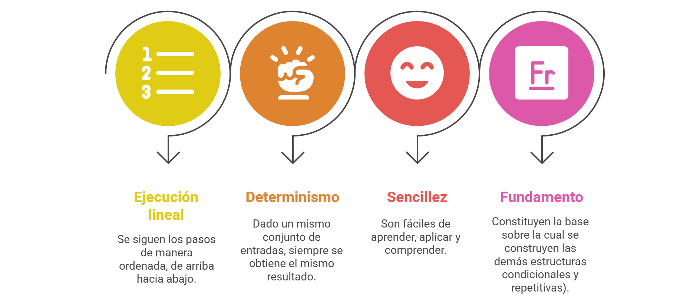
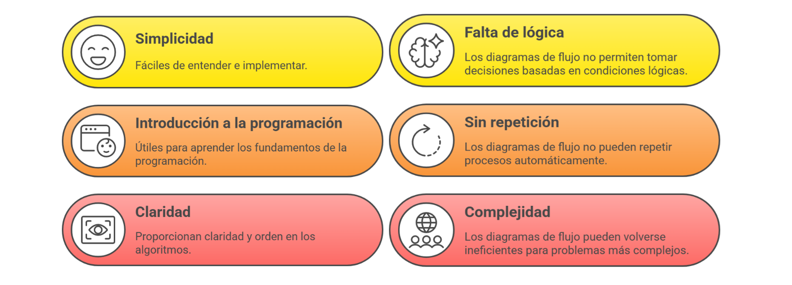
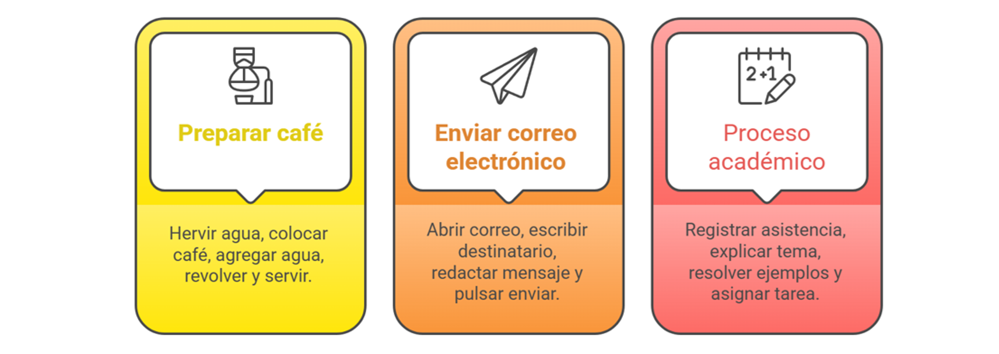
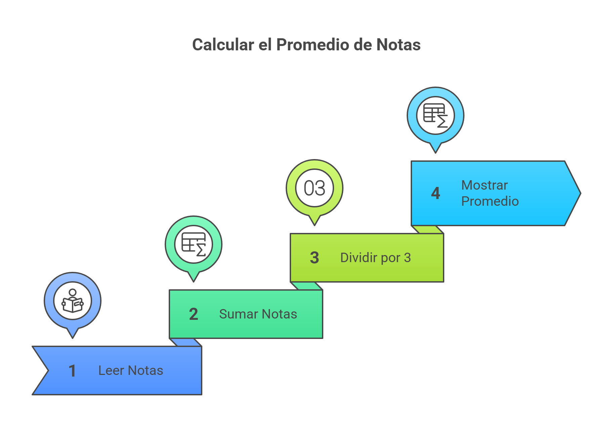
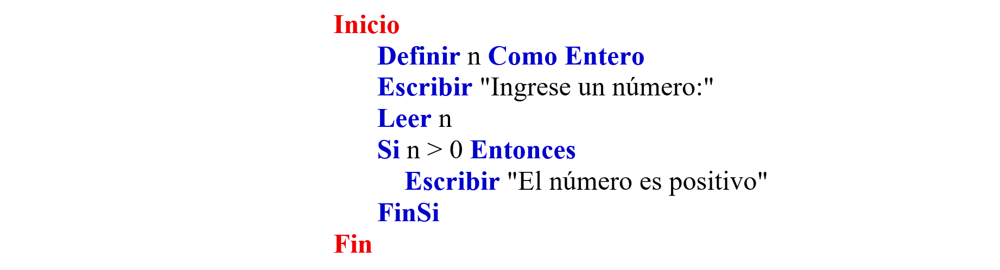

Estructuras de control secuenciales y condicionales
💻 En programación, las estructuras de control son como el mapa 🗺️ que guía a un programa.
Sin estas estructuras, el programa solo podría ejecutar instrucciones una tras otra, sin tomar decisiones ni reaccionar a distintas situaciones.
Con esta guía aprenderás paso a paso cómo funcionan las secuencias y las estructuras condicionales 🔎,
para que puedas usarlas sin miedo y con confianza ✅.
Navega por el menú para explorar el objetivo, el contenido, las actividades, la evaluación y los recursos.
Objetivo
🧩 Comprender y dominar las estructuras de control básicas (secuenciales y condicionales) mediante explicaciones sencillas, ejemplos prácticos y ejercicios guiados en pseudocódigo. ✍️💡
Estructuras de control secuenciales
＋
Las
estructuras de control secuenciales
Representan el flujo natural de la lógica: una acción ocurre después de otra.
son la forma más básica de organización en un algoritmo o programa. En ellas, las instrucciones se ejecutan una tras otra, en el mismo orden en que fueron escritas, sin condiciones ni repeticiones.
Características de estructuras de control secuenciales

📌 ESTRUCTURA DE CONTROL
Aunque son limitadas, siempre estarán presentes, ya sea de manera independiente o combinadas con estructuras condicionales y repetitivas para resolver problemas más complejos.
— Las estructuras de control secuenciales constituyen el pilar de la programación,
pues aseguran que las instrucciones se ejecuten de forma ordenada y lógica.
En las estructuras secuenciales encontramos
Ventajas
Las ventajas de las estructuras secuanciales se reflejan en su simplicidad, ya que son fáciles de entender e implementar; en su valor como introducción a la programación, al ser útiles para aprender los fundamentos; y en la claridad que proporcionan al dar orden y lógica a los algoritmos.
y también algunas
Limitaciones
Limitaciones: la falta de lógica en los diagramas de flujo simples que no permiten tomar decisiones complejas, la ausencia de repetición automática de procesos, y la posible complejidad que surge cuando se aplican a problemas de mayor escala.
.

Ejemplos cotidianos donde se aplican estructuras de control secuenciales

Ejemplo en
pseudocódigo
El pseudocódigo es una forma de escribir algoritmos usando un lenguaje intermedio, que combina palabras del lenguaje natural con estructuras básicas de programación.
- problemática: calcular área
Estructuras de control condicionales
＋
Las estructuras de controlcondicionales
Estas condiciones
se expresan como proposiciones
que pueden ser verdaderas
(True) o falsas (False)
.
permiten que un programa tome decisiones según se cumpla o no una condición lógica.

Regla práctica: usa paréntesis para dejar clara la intención.
Por ejemplo, si tienes la ecuación:
a + b * c
para que se calcule primero a + b (usa paréntesis) así:
(a + b) * c.
Condicional Simple (Si)
＋
En programación usamos tipos de datos primitivos para indicar qué clase de información puede guardar una variable o constante y qué operaciones se pueden hacer con ella. En lógica de programación trabajamos, principalmente, con los siguientes:
Condicional compuesto o doble (Si - sino)
＋
En programación usamos tipos de datos primitivos para indicar qué clase de información puede guardar una variable o constante y qué operaciones se pueden hacer con ella. En lógica de programación trabajamos, principalmente, con los siguientes:
Condicionales múltiples
＋
En programación usamos identificadores para nombrar datos. Los dos más comunes son
variables y constantes: según la necesidad, el valor puede cambiar o permanecer fijo.
Una variable
Su valor puede cambiar durante la ejecución.
Ejemplos: edad = 17 → 18 total = subtotal + iva temperaturaHoy = 32; temperaturaManana = 31
Suele ser numérica, de texto o lógica (V/F).
es un identificador cuyo valor puede modificarse a lo largo del algoritmo.
Una constante
Su valor NO cambia en todo el programa.
Ejemplos: PI = 3.1416, IVA = 0.19, MAX_ESTUDIANTES = 40.
Convención: escribir en MAYÚSCULAS con guion bajo.
mantiene el mismo valor durante la ejecución (no se reasigna).

Condicionales múltiples con SI
＋
En programación usamos identificadores para nombrar datos. Los dos más comunes son
variables y constantes: según la necesidad, el valor puede cambiar o permanecer fijo.
Una variable
Su valor puede cambiar durante la ejecución.
Ejemplos: edad = 17 → 18 total = subtotal + iva temperaturaHoy = 32; temperaturaManana = 31
Suele ser numérica, de texto o lógica (V/F).
es un identificador cuyo valor puede modificarse a lo largo del algoritmo.
Una constante
Su valor NO cambia en todo el programa.
Ejemplos: PI = 3.1416, IVA = 0.19, MAX_ESTUDIANTES = 40.
Convención: escribir en MAYÚSCULAS con guion bajo.
mantiene el mismo valor durante la ejecución (no se reasigna).
Condicionales múltiples con Según
＋
¿Qué buscamos?
Restricciones: reglas que siempre deben cumplirse (rango, formato, opciones válidas, existencia del dato).
Condición básica: una comparación que activa una acción (sin combinar con “y/o” todavía).
Comparadores: operadores relacionales.
¿Qué tener en cuenta?
Entradas: qué datos llegan.
Restricciones (mín. 2): rango, formato u opciones permitidas.
Condición (1 comparación): qué evaluar para decidir una acción.
Proceso: operación sencilla (cálculo o asignación).
Salidas + Mensajes: qué mostrar/guardar; texto breve si se rompe una restricción.
Ejemplo — Ejercicio práctico de un Parqueadero
Un parqueadero cobra por fracción de hora. Si el número de horas es mayor o igual que 8,
se debe aplicar al cliente un descuento de 1 hora. Eso significa que,
si el vehículo del cliente demora 10 horas en el parqueadero,
solo se le deben cobrar 9 horas.
Entradas sugeridas
horas (entero)
tarifaHora (entero)
Restricciones
horas ≥ 1
tarifaHora > 0
Condición
si horas ≥ 8 entonces descuento = tarifaHora
Proceso
subtotal = horas * tarifaHora
descuento = 0
si (horas >= 8) entonces
descuento = tarifaHora
fin si
total = subtotal - descuento
Salidas
total, descuento
Actividades
Situación 1
Un Cine necesita un sistema que permita mostrar el valor a cobrar por tiquete de entrada,
teniendo en cuenta que se aplica un descuento infantil del 20% si el niño es
menor de 12 años.
Entradas sugeridas
edad (entero)
precioBase (real)
Restricciones
Condición
Proceso
Salidas
Situación 2
Una tienda local aplica un descuento del 10% si el medio de pago es
igual a “efectivo”.
Entradas sugeridas
subtotal (real)
medioPago (texto)
Restricciones
Condición
Proceso
Salidas
Evaluación
Recursos
Lógica de programación
Libro
Trejos Buriticá, O. I. (2023). Lógica de programación. Ediciones de la U.